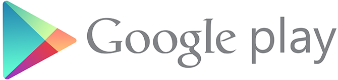

Android is a mobile operating system developed by Google, based on the Linux kernel and designed primarily for touchscreen mobile devices such as smartphones and tablets. Android's user interface is mainly based on direct manipulation, using touch gestures that loosely correspond to real-world actions, such as swiping, tapping and pinching, to manipulate on-screen objects, along with a virtual keyboard for text input. In addition to touchscreen devices, Google has further developed Android TV for televisions, Android Auto for cars, and Android Wear for wrist watches, each with a specialized user interface. Variants of Android are also used on notebooks, game consoles, digital cameras, and other electronics.
Android has the largest installed base of all operating systems (OS) of any kind. Android has been the best selling OS on tablets since 2013, and on smartphones it is dominant by any metric. Initially developed by Android, Inc., which Google bought in 2005, Android was unveiled in 2007 along with the founding of the Open Handset Alliance – a consortium of hardware, software, and telecommunication companies devoted to advancing open standards for mobile devices. As of July 2013, the Google Play store has had over one million Android applications ("apps") published – including many "business-class apps" that rival competing mobile platforms – and over 50 billion applications downloaded. An April–May 2013 survey of mobile application developers found that 71% of developers create applications for Android, and a 2015 survey found that 40% of full-time professional developers see Android as their priority target platform, which is comparable to Apple's iOS on 37% with both platforms far above others. In September 2015, Android had 1.4 billion monthly active devices.
Android's source code is released by Google under open source licenses, although most Android devices ultimately ship with a combination of open source and proprietary software, including proprietary software required for accessing Google services. Android is popular with technology companies that require a ready-made, low-cost and customizable operating system for high-tech devices. Its open nature has encouraged a large community of developers and enthusiasts to use the open-source code as a foundation for community-driven projects, which deliver updates to older devices, add new features for advanced users or bring Android to devices originally shipped with other operating systems. The success of Android has made it a target for patent (and copyright) litigation as part of the so-called "smartphone wars" between technology companies.
Android phones are highly customisable and as such can be altered to suit your tastes and needs; with wallpapers, themes and launchers which completely change the look of your device's interface. You can download applications to do all sorts of things like check your Facebook and Twitter feeds, manage your bank account, order pizza and play games. You can plan events from your phone's calendar and see them on your computer or browse websites on your desktop Mac or PC and pick them up on your phone
Another neat feature of Android is that it automatically backs up your contacts for you. When you set up an Android phone you’ll need to create a Google Account or sign in with an existing one. Every time you save a number to the address book of your Android phone it will be synced to your Google Account.The benefit of this is that if you lose your phone all of your numbers will be saved. The next time you get an Android phone (or an iPhone or Windows Phone if you prefer) and sign in with your Google Account, all of your contacts and friend's numbers will be displayed in your new phone’s address book immediately, no need to transfer or back them up anywhere else.
Syncing is a way for your phone to keep all your information; websites, contacts, calendar entries and apps up-to-date. This can happen over your phone's mobile data or WiFi connection, seamlessly, in the background.
There are millions of apps and games available to download from the Google Play store (formerly Android Market). There are camera apps that allow you to take pictures with artistic effects and music players which allow you to stream songs from the web or create playlists. You can customise the appearance of your Android handset with a number of wallpapers based on pictures you’ve taken yourself or downloaded from the internet too.
There are also various on-screen widgets to download which allow access to, and the alteration of, settings on your phone, without the need to dive through menus as you would on non-Android devices. You can pretty much create your own system of shortcuts and menus to better suit how you uniquely use your phone.
The majority of apps can be downloaded from the Google Play store (the equivalent of Apple’s App Store), which includes a mix of free as well as 'premium' apps that you have to pay for. Some apps have ‘lite’ versions which are free, in the hopes you’ll enjoy them enough to upgrade to the full premium version. Others - like Pokémon GO - are free, but include adverts or the ability to make in-app purchases.
The same account that lets you backup your contacts can also have financial details added to it, giving you the ability to purchase content from the Google Play store directly. You can pay either by debit or credit card and initial setup takes less than five minutes from a computer.
Although there are well over a million apps available to Android users in the Google Play store, some developers choose to make their apps available to download from their own sites or alternative app stores. In order to download them, you have to change some settings on your phone before visiting these sites on your Android device's web browser. By downloading apps outside of the Google Play store, you do run the risk of attack in the form of data theft or by leaving yourself more susceptible to viruses, so be careful if you choose this route.
Should you upgrade or change your Android phone; log into your Google account and you’ll be able to download your previously owned apps again, without being charged. In recent years, Google has expanded Google Play to offer more than just apps, with books, magazines, music and movies available for purchase and download in much the same way too.
Any handset maker is free to make an Android phone if they want to. The likes of Motorola, HTC, Samsung and Sony, Acer, Alcatel, Asus, Huawei, LG and ZTE have all made Android phones (and tablets). Blackberry also launched its very first Android phone, the strangely-named Blackberry Priv at the end of 2015.
Although Google owns the OS (Android), the company has not made any of the smartphones on which it runs in-house (it did make the Android-powered Pixel C tablet in 2015). However, it has partnered with various handset manufacturers over the years to make its own-brand smartphones under the 'Nexus' name.
Google's Nexus phones were typically the first to receive new updates and were considered to be the flagship Android phones, even though some other Android devices sported larger screens, better cameras and more powerful hardware. In 2016 Google shelved the Nexus brand name and replaced by launching two new phones called the Pixel and Pixel XL. For all intents and purposes, these new phones enjoy all the same benefits as the Nexus devices did and are essentially the spiritual successors to the Nexus line.
Google is constantly working on new versions of the Android software. These releases are infrequent; at the moment they normally come out every six months or so, but Google is looking to slow this down to once a year. Check out our handy, comprehensive guide to every Android version out there.
Versions usually come with a numerical code and a name that’s so far been themed after sweets and desserts, running in alphabetical order.
The latest version, Android Nougat, aims to make the OS faster with a feature called 'instant apps', offers improved battery life with Doze on-the-go and adds native VR support. Here's what's changed between the different Android versions.